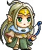
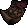
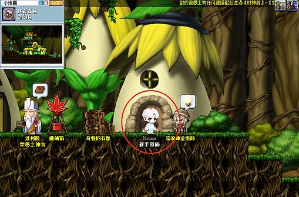
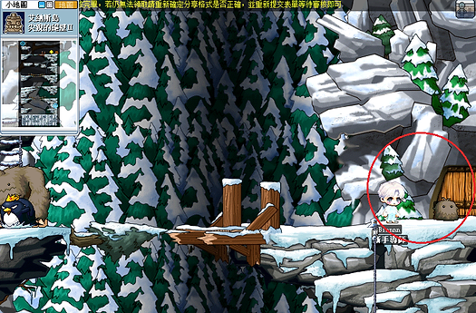

組隊任務區
v113功略區
通用攻略區
題庫區
【達到70等即可進行第三次轉職!】
Step1
回到【弓箭手村 - 弓箭手培訓中心】找一轉教官【赫麗娜】，【赫麗娜】會把你傳送到【冰原雪域 - 長老公館】（如果沒有傳送也可以自行前往）

Step2
抵達【冰原雪域 - 長老公館】後，跟【蕾妮】接取轉職任務，接取後轉職教官需要【黑符】交給他
Step3
前往【奇幻村 - 森林迷宮V】（奇幻村小房子隱藏點一直往下走）的【次元之門】，進入後擊敗轉職教官取得【黑符】回交給轉職教官取得【力量項鍊】


Step4
取得【力量項鍊】後並且攜帶【黑暗水晶】前往【冰原雪域 - 雪原聖地】（在尖瑞的峭壁II右上隱藏點）與【神聖的石頭】進行問答任務
題庫
在維多利亞島的魔法森林看不見的NPC是誰？答案：露爾
在艾納斯島沒有哪個怪物？答案：黑鱷魚
綠菇菇、木妖、藍水靈、斧木妖、三眼章魚，哪個是等級最高的怪物？答案：斧木妖
楓之谷下列藥品中，哪組藥品與功效是不正確對應關係的？答案：清晨之露——3000MP恢復
與寵物無關的NPC是誰？答案：比休斯
在維多利亞島的弓箭手村看不見的NPC是誰？答案：特奧
楓之島沒有哪個怪物？答案：肥肥
弓箭手村的瑪亞請求我們拿什麼物品給她，來治好她的病？答案：奇怪的藥
在維多利亞島沒有的村莊是？答案：楓葉村
維多利亞島沒有哪個怪物？答案：石球
在艾納斯島的阿爾法小隊中沒有的人物是誰？答案：皮特
喚醒麥吉的舊戰劍任務不需要的材料是什麼？答案：妖精之翼
在維多利亞島的墮落城市看不見的NPC是誰？答案：魯克
下列怪物中，哪組怪物與打倒它所能得到的戰利品是不正確對應關係的？答案：食人花——食人花的葉子
以下會飛的怪物是什麼？答案：巫婆
被怪物攻擊時特別的異常狀態沒有被正確說明的是哪一個？答案：虛弱——移動速度降低
在艾納斯島的天空之城看不見的NPC是誰？答案：索非亞
以下要求等級最高的任務是？答案：亞凱斯特和黑暗水晶
下列不是進行合成,煉製,製作的NPC是哪一個？答案：賽恩
楓之谷下列藥品中，哪組藥品與功效是正確對應關係的？答案：披薩——HP400恢復
從楓之谷一開始，遇到的第一個NPC是誰？答案：莎麗
楓之谷中，從等級1到等級2需要多少經驗值？答案：15
在艾納斯島的冰原雪域看不見的NPC是誰？答案：管家艾瑪
以下哪個職業不是2轉中出現的職業?答案： 魔導士(巫師)
以下可以重複執行的任務是？答案：查理中士的交換任務
下列怪物中，哪組怪物與打倒它所能得到的戰利品是正確對應關係的？答案：蝙蝠——蝙蝠翅膀
在維多利亞島的勇士之村看不見的NPC是誰？答案：易德
在墮落城市中，離家出走的少年阿勒斯的父親是誰？答案：長老斯坦
為了2轉而收集30個黑珠給轉職教官，從他那裏得到什麼？答案：英雄證書
根據不同職業的第1次轉職必須條件,被正確敘述的是哪一個？答案：弓箭手——敏捷 25 以上
Step5
成功連續答對5題後取得【智慧項鍊】，回到【冰原雪域 - 長老公館】交給轉職教官即可完成三轉！
©熊熊幫 - 世界最腦殘的楓之谷私服群